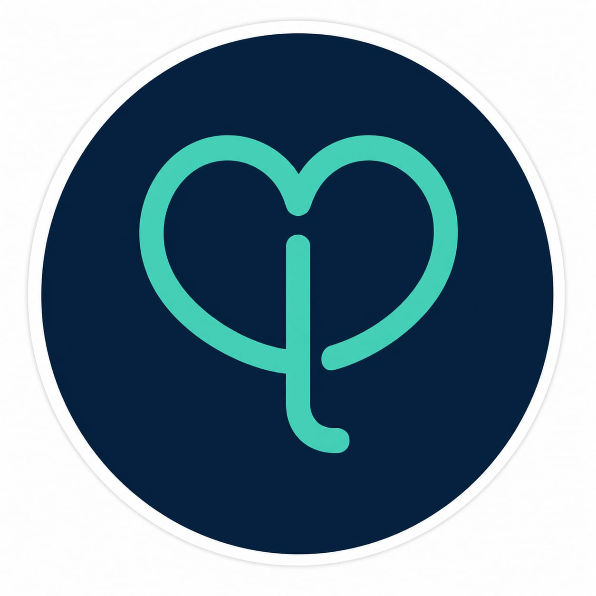

SaaS para psicólogos
Ferramentas digitais pensadas para apoiar a organização da rotina profissional e centralizar recursos importantes em um só lugar.

ConectoPsi Em homologaçãoUma plataforma SaaS pensada para psicólogos, reunindo ferramentas para apoiar a rotina profissional e páginas individuais para apresentar seu trabalho. Para quem busca atendimento, o ConectoPsi também será um espaço para conhecer profissionais e encontrar caminhos de cuidado em saúde mental.
O sistema está em fase de homologação. Neste momento, estamos revisando fluxos, experiência de uso e detalhes antes da abertura da plataforma.
O ConectoPsi nasce com duas frentes que se complementam: oferecer aos psicólogos ferramentas digitais para apoiar sua rotina profissional e criar um espaço onde cada profissional possa ter sua página individual, facilitando a descoberta e a conexão com pessoas que buscam atendimento psicológico.
Ferramentas digitais pensadas para apoiar a organização da rotina profissional e centralizar recursos importantes em um só lugar.
Cada psicólogo poderá apresentar seu trabalho em uma página individual, com informações organizadas para facilitar a descoberta e o contato.
Um espaço para aproximar pessoas de profissionais de psicologia, tornando mais simples conhecer opções de atendimento e encontrar um profissional.
Estamos tratando privacidade e proteção de informações como pontos importantes da construção do ConectoPsi. Durante a homologação, esses aspectos também fazem parte das revisões antes da disponibilização do serviço.
Estamos trabalhando nos últimos ajustes para que o ConectoPsi chegue com a experiência que planejamos.